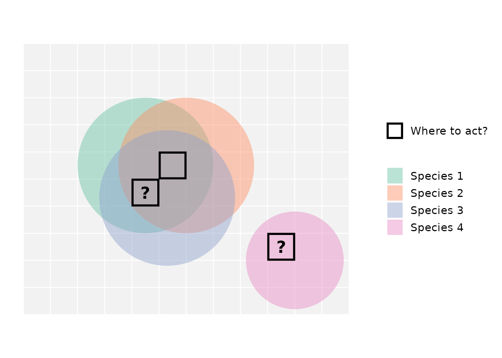
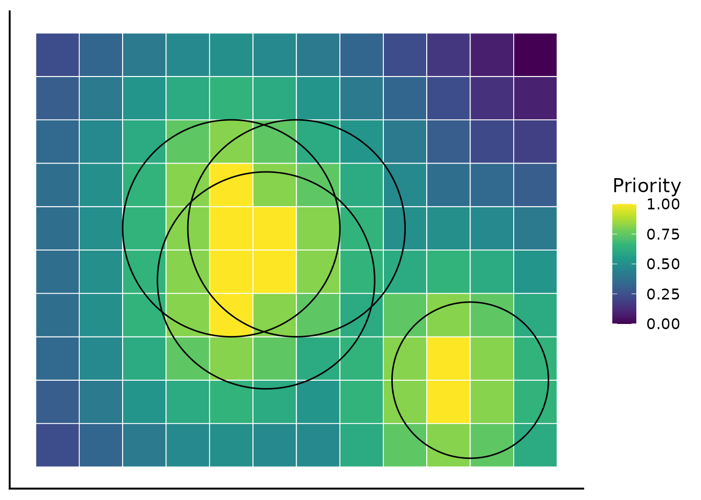

Why spatial conservation prioritization?
Source:vignettes/articles/why_spatial_prioritization.Rmd
why_spatial_prioritization.RmdThis vignette introduces spatial conservation prioritization, a powerful approach for deciding where conservation actions matter most.
The geography of conservation decisions
Spatial conservation decisions are ultimately decisions about where to act. Even when conservation goals are global, the real impact happens in specific places, whether it’s a forest, a coral reef, a river basin, or a broader landscape. Because space is finite, conservation always involves making choices.
Protecting one area usually means not protecting another, at least not immediately or to the same extent.
This simple yet crucial reality shapes modern conservation planning because:
- Biodiversity is unevenly distributed across the globe.
- Threats vary spatially, affecting some areas more than others.
- Resources are limited, creating competition among different land uses and priorities.
Therefore, conservation operates under constraints such as:
- Limited budgets,
- Conflicting land uses,
- Multiple objectives that cannot all be maximized simultaneously.
These constraints are not failures, they are the starting point for effective, strategic conservation planning.

The figure illustrates a common conservation dilemma. Three species overlap in the central area, creating a location with high biodiversity value, while a fourth species occurs in isolation. When conservation action is limited to only a few places, should we prioritize areas that protect many species at once, or areas that are critical for a species found nowhere else?
Consider the black-outlined cells and the question marks: if we can only select two locations for protection, which one would you pick as the second? Why might choosing only two out of the three candidate locations be challenging?
Choosing where to act inevitably involves navigating difficult trade-offs.
From spatial patterns to decision challenges
Over the past decades, conservation science has made enormous progress in data availability. Species distribution models, habitat maps, remote sensing products, and global biodiversity databases are now more accessible than ever. However, conservation planners are often challenged by the difficulty of turning complex, sometimes incomplete data into clear decisions. A common first approach is to layer maps on top of one another to visualize species richness, threat levels, or habitat extent. While informative, this rarely leads to clear choices.
When multiple features are considered simultaneously, conflicts emerge:
- Areas important for one species may be less important for another.
- Regions with high biodiversity value may overlap with areas of intense human use.
This often leads to a familiar frustration:
“I have all the information I need — so why is deciding still so hard?”
The problem lies not in the data alone, but in the lack of a structured way to resolve trade-offs across space.
Moving beyond yes or no: The need to prioritize
Many conservation decisions are often seen as simple binary choices: protect or not protect, include or exclude. But in reality, conservation planning rarely works this way. Decisions are usually incremental, i.e. actions happen over time, budgets change, and priorities evolve as new information becomes available. In this dynamic context, flexibility is key.
Instead of asking “Should this area be protected?” planners often need to ask:
- Which areas matter more?
- Which actions should happen first?
- If only part of a landscape can be addressed now, where should we start?
This shift from selection to prioritization fundamentally changes the problem.The goal is no longer to find a single “best” solution, but to support informed decisions that work under uncertainty and constraints.
Understanding this shift helps planners make smarter choices that adapt to real-world challenges.
Ordering space by importance
Spatial conservation prioritization offers a structured way to deal with complex trade-offs by ordering space according to relative importance. Instead of dividing the world into “protected” and “unprotected” areas, prioritization produces a continuous ranking. Every location receives a value that reflects how much it contributes to overall conservation goals.
This approach changes how we think about conservation decisions:
- Areas are no longer simply selected or rejected.
- Their importance is understood relative to the rest of the landscape.
- Decisions can adapt to different budget levels or policy scenarios.
Importantly, a place is not valuable in isolation. Spatial conservation prioritization evaluates its contribution through well-established theoretical principles:
-
Complementarity — how well a location adds value to
the existing network.
-
Representation — how many biodiversity features it
supports.
- Irreplaceability — how difficult it would be to substitute elsewhere.
Because the result is a ranking rather than a fixed boundary, planners can ask:
What if we protect the top 10% of the landscape?
What changes if we expand protection to 20%?
Where do trade-offs become most visible?

This figure shows how the species distributions illustrated earlier could hypothetically translate into a continuous priority map. The color gradient reflects relative conservation importance, with bright yellow cells representing the highest-priority locations. Peaks occur both in areas of high species richness and in locations critical for unique species, reflecting the principles of complementarity and irreplaceability in spatial prioritization.
Zonation as a practical implementation
Spatial conservation prioritization requires methods that can systematically compare locations while accounting for multiple biodiversity features. Zonation is one such method. Zonation produces a hierarchical ranking of the landscape, from the most to the least valuable areas for conservation. Rather than selecting sites one by one, it progressively removes the least valuable areas, revealing which locations remain most important as the landscape is reduced.
This process allows Zonation to:
-
Consider multiple biodiversity features at
once,
-
Evaluate areas based on how they complement each
other,
- Highlight trade-offs clearly and transparently.
Because the ranking is continuous, it supports flexible decision-making.
In this way, Zonation turns complex spatial data into structured, defensible conservation guidance.
How the ZonationR package fits in
The ZonationR package is designed to support the use of Zonation within R workflows. It is important to clarify what it does, and what it does not do.
What it does not do:
- Replace the Zonation software
- Modify the underlying prioritization algorithm
What it helps you do:
- Prepare and structure input data
- Run and manage analyses from R
- Organize outputs in reproducible workflows
By bringing Zonation into R, the package makes it easier to develop transparent analytical pipelines, teach spatial conservation prioritization, and document every step of the decision process.
Additional resources
For readers interested in more detailed discussions of the topics covered:
Core concepts in systematic conservation planning Kukkala et al., 2013
Trade-offs between different prioritization approaches Cavalcante et al., 2025
Zonation 5 algorithm details Moilanen et al., 2021